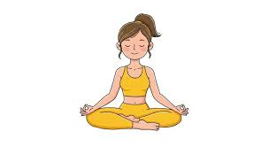
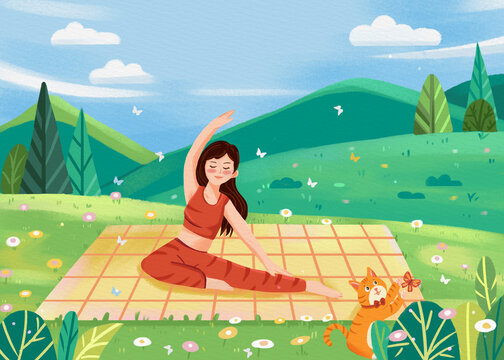
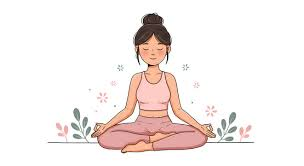

Service 1
Foundational Asanas: Moving beyond basic poses to incorporate balancing postures (e.g., Tree Pose or High Lunge) and strength-building asanas (e.g., Cobra or Warrior).

Service 2
Breath Control (Pranayama): Integrating deeper yogic breathing, such as "Om" chanting and localized lung capacity exercises

Service 3
Mindfulness and Relaxation: Ending the session with guided relaxation or short meditation periods to lower stress levels
Product 1
The end goal of a yoga practice is not just to achieve physical fitness but also inner clarity, spiritual growth, and transcendence. Yoga helps individuals cultivate self-awareness, compassion for others, and a connection with something greater than themselves.

Product 2
When we experience suffering, it can be easy to become consumed by negative thoughts and feelings. However, through practicing mindfulness techniques like meditation or deep breathing exercises found in yoga classes or at-home sessions – we can create a space where these emotions don’t control us anymore.

Product 3
By learning how to observe our thoughts without judgment or attachment while on the mat during class time, we begin cultivating an ability that extends beyond everyday life situations – allowing us to access more peaceful states when faced with challenging situations.

Product 4
Ultimately if one defines “end” as being free from the cycle of pain caused by repetitive thought patterns, then through dedication towards their journey on this path, they have a chance at finding freedom from this type of inner turmoil.